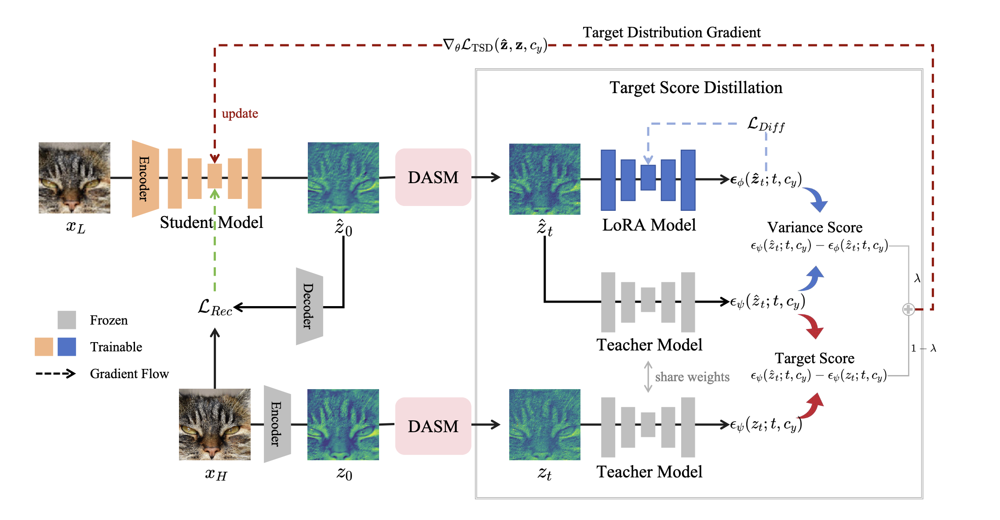
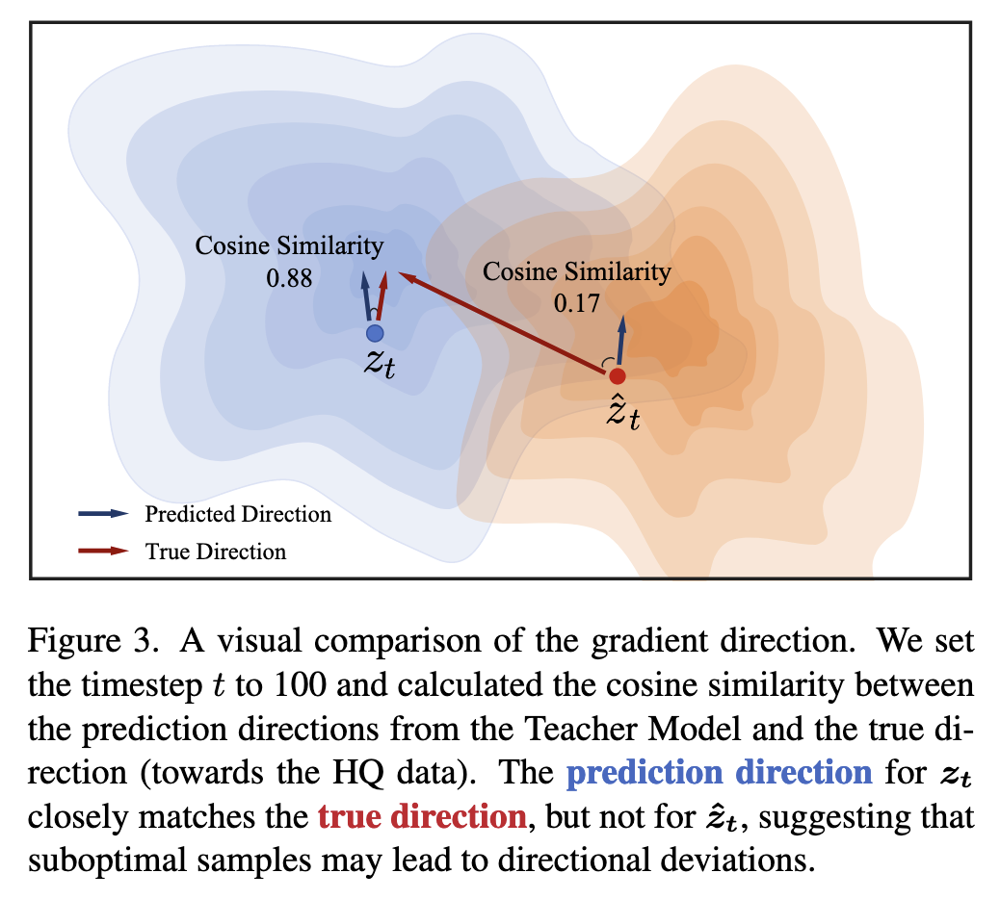
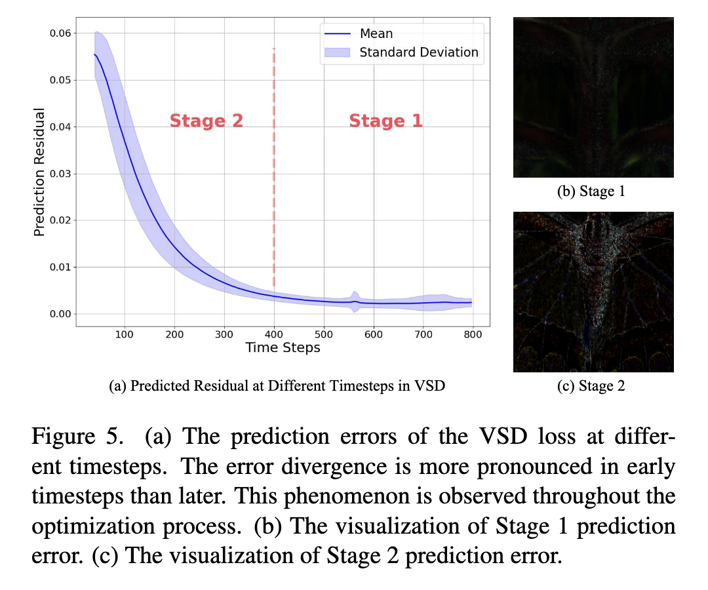
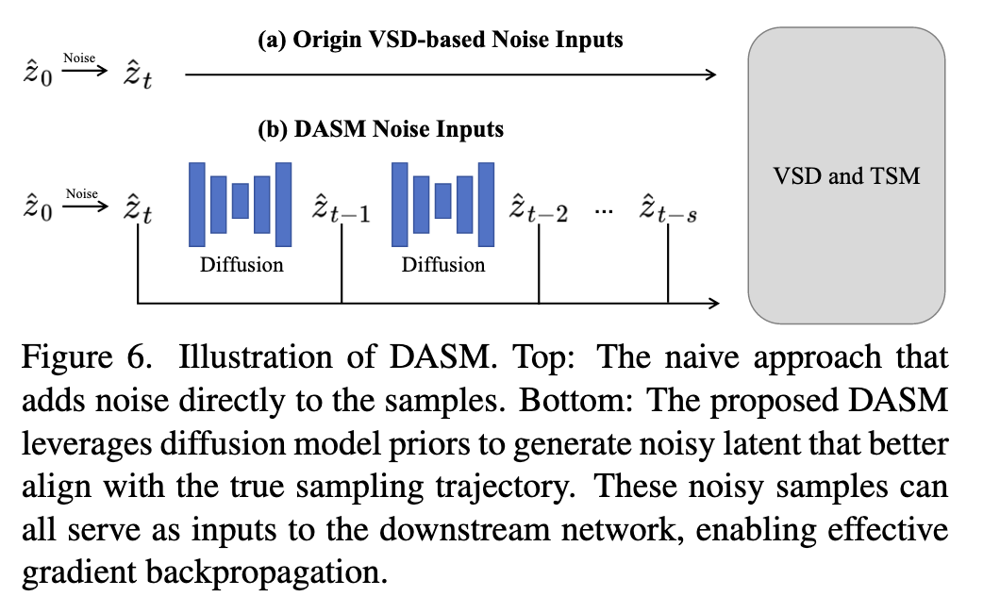

TSD-SR阅读笔记
论文阅读笔记：《TSD-SR: One-Step Diffusion with Target Score Distillation for Real-World Image Super-Resolution》

论文核心思想
本文提出了一种名为 TSD-SR 的新颖框架，旨在将强大的预训练文本到图像（T2I）扩散模型蒸馏成一个高效且有效的 单步 真实世界图像超分辨率（Real-ISR）模型。其核心思想是通过新颖的 目标分数蒸馏（TSD） 和 分布感知采样模块（DASM），解决现有蒸馏方法在应用于超分辨率任务时的性能瓶颈，从而在实现极快推理速度的同时，达到甚至超越许多复杂多步模型的图像恢复质量。
模型解决了什么问题？
该模型主要针对现有基于扩散模型的超分辨率方法中存在的两大痛点：
- 多步模型的效率低下：大多数利用扩散模型先验的Real-ISR方法，由于其固有的迭代去噪特性，需要20-50步的推理过程，导致计算成本高昂，速度远不及GAN等单步方法。
- 现有单步蒸馏方法的性能局限：虽然已有工作尝试将扩散模型蒸馏为单步或少步，但它们在图像恢复和细节生成方面的表现并不尽如人意。本文作者发现，这主要是因为直接套用变分分数蒸馏（VSD） 到Real-ISR任务中存在两个关键缺陷：
- 不可靠的梯度方向：VSD依赖教师模型提供优化方向，但在训练初期，当学生模型生成的图像质量较差时，教师模型提供的梯度方向并不可靠，这会导致生成结果出现视觉伪影。
- 细节恢复能力不足：VSD损失在不同时间步（timestep）上的变化很大。传统的VSD框架采用均匀采样策略来选择时间步，这会导致对细节恢复至关重要的早期时间步的梯度被稀释，使得模型难以学习恢复精细纹理。

方法 (Methodology)
为了解决上述问题，TSD-SR引入了两个核心组件：TSD Loss 和 DASM。
1. TSD Loss (目标分数蒸馏损失)
TSD Loss是一种为学生模型提供稳定可靠梯度的组合损失函数。其目的是在VSD的基础上，引入一个更可靠的监督信号来指导优化。
其梯度公式如下：
这个损失由两部分构成：
目标分数匹配 (TSM): $\epsilon{\psi}(\hat{z}{t};t,c{y}) - \epsilon{\psi}(z{t};t,c{y})$
- 作用：该项强制让教师模型($\epsilon{\psi}
\hat{z}{t} z_{t}$)的预测尽可能保持一致。这相当于提供了一个来自真实数据分布的“锚点”，为优化提供了更可靠的方向，有效避免了伪影和过平滑问题。
- 作用：该项强制让教师模型($\epsilon{\psi}
变分分数蒸馏 (VSD): $\lambda(\epsilon{\psi}(z{t};t,c{y}) - \epsilon{\phi}(\hat{z}{t};t,c{y}))$
- 作用：该项是经典VSD的变体，旨在将教师模型($\epsilon{\psi}
\epsilon{\phi}$)，促使学生模型的分布向教师模型看齐。
- 作用：该项是经典VSD的变体，旨在将教师模型($\epsilon{\psi}
2. DASM (分布感知采样模块)
DASM是一个为解决细节恢复不足问题而设计的采样模块。
- 动机：它旨在克服传统均匀采样策略带来的梯度稀释问题。

- 结构与流程：
- DASM首先像常规方法一样，通过加噪得到一个初始的含噪样本
。 - 接着，它不再止步于此，而是利用LoRA模型($\epsilon{\phi}
\hat{z}{t-1}, \hat{z}_{t-2}, \dots$)。 - 在一次训练迭代中，所有这些由DASM生成的样本都会被用来计算TSD损失，并将它们的梯度累积起来，共同更新学生模型。
- DASM首先像常规方法一样，通过加噪得到一个初始的含噪样本
- 优势：通过这种方式，DASM在一次迭代中就强化了对细节恢复至关重要的早期时间步的学习，使得梯度能够更集中地用于优化细节生成，有效提升了图像的清晰度和真实感。
训练与推理 (Training and Inference)
训练策略
模型的训练是一个知识蒸馏过程，交替更新两个主要部分：
学生模型 (
) 的更新： - 使用一个组合损失进行优化，该损失由重建损失和正则化损失构成。
- 重建损失 (
): 保证基础内容正确，由像素空间的LPIPS损失和潜空间的MSE损失组成。 - 正则化损失 (
): 即前述的TSD损失，用于提升真实感。该损失的计算利用了DASM生成的系列样本。
LoRA模型 (
) 的更新： - 作为VSD框架的一部分，这个可训练的教师副本需要被独立更新。
- 它通过一个扩散损失 (
) 进行训练，目标是让其去噪能力与原版教师模型保持一致。
推理策略
推理过程极为简洁高效：
- 单步完成：模型的核心优势在于它是单步的。
- 流程：输入一张低质量图像，训练好的学生模型
在一次前向传播中即可直接输出高质量的超分辨率结果。 - 高效性：这使得其推理速度非常快，远超需要迭代计算的多步模型，在性能和效率之间取得了极佳的平衡。
总结与个人看法
TSD-SR是一篇目标明确、方法创新的优秀工作。它精准地指出了VSD框架在应用于Real-ISR任务时的具体缺陷，并为此设计了两个针对性的解决方案：TSD Loss和DASM。
- 贡献清晰：TSD Loss通过引入真实数据作为锚点，解决了VSD梯度不可靠的问题；DASM通过模拟采样轨迹累积梯度，解决了均匀采样导致的细节学习不足问题。
- 实验充分：论文中的消融实验有力地证明了每个组件的有效性，并且在多个基准测试中，其单步模型的性能指标和视觉效果均表现出强大的竞争力。
- 启发性：这项工作为如何将大型生成模型的能力高效地蒸馏到特定下游任务中提供了一个很好的范例。它表明，简单地套用现有框架可能效果不佳，深入分析任务特性并进行针对性地改进才是关键。
总而言之，TSD-SR不仅提供了一个实用、高效的超分辨率工具，也为未来相关领域的研究提供了宝贵的思路。
本博客所有文章除特别声明外，均采用 CC BY-NC-SA 4.0 许可协议。转载请注明来源 -UNSWEAR-！